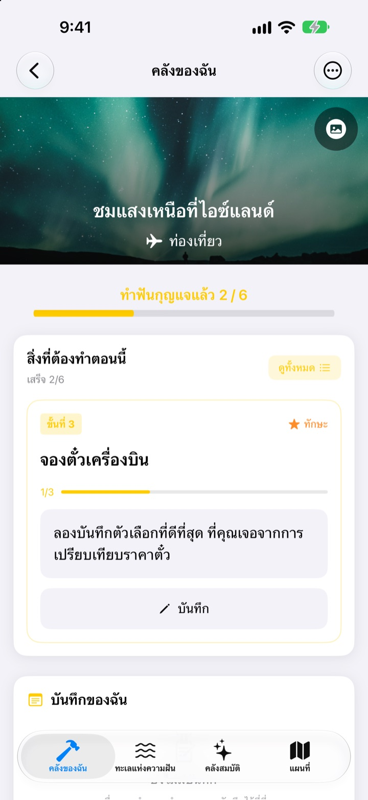
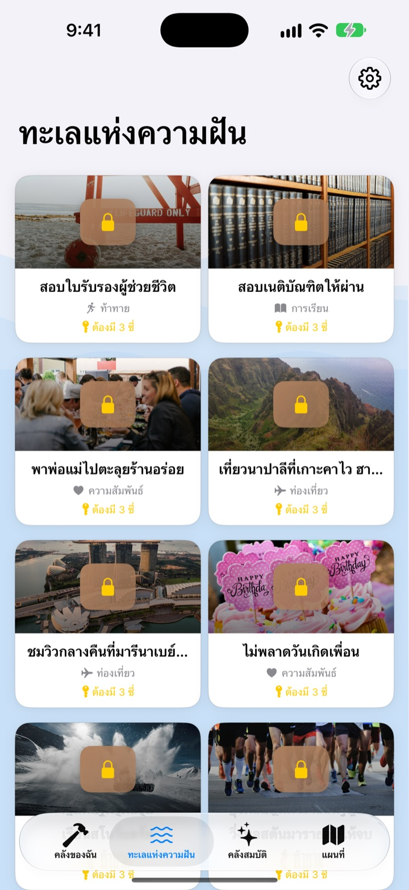
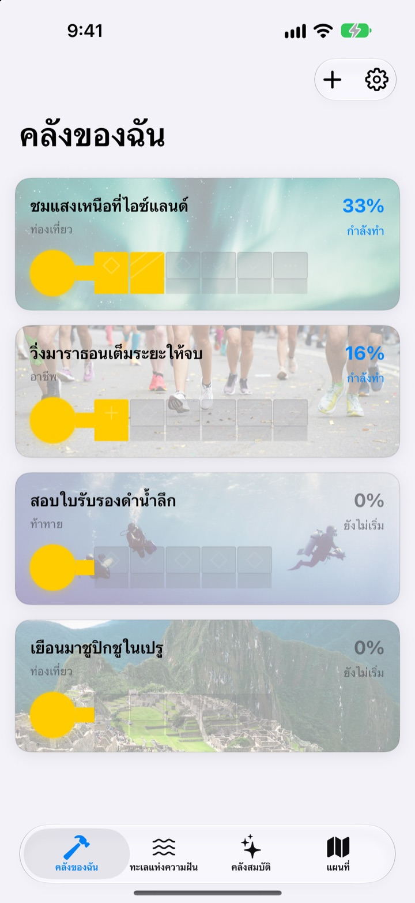
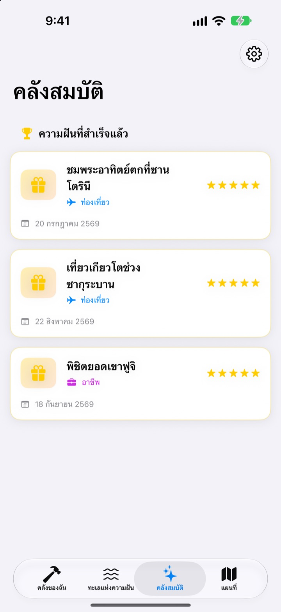

อย่าแค่เขียน
บักเก็ตลิสต์ทิ้งไว้
เลือกความฝันสักหนึ่งอย่าง ขั้นตอนเล็กๆ ที่พาไปถึงจะกลายเป็นฟันของกุญแจ ตอบขั้นตอนของวันนี้ไปทีละข้อ ไม่ทันไรกล่องความฝันก็เปิดออก
ซื้อครั้งเดียวใช้ได้ทุกฟีเจอร์ ไม่มีการสมัครสมาชิก ไม่มีโฆษณา

ลองทำกุญแจให้เสร็จ
ความฝันดูแสงเหนือที่ไอซ์แลนด์เหลืออีกสองขั้นตอน ตอบคำถามข้อละบรรทัด (เว้นว่างก็ได้) แล้วแตะ “ถัดไป” ฟันจะเต็มทีละซี่ เมื่อเต็มครบก็เปิดกล่องได้
เคยเขียนบักเก็ตลิสต์ไว้แล้วลืมไปไหม
“ไปดูแสงเหนือ” ใหญ่เกินจนไม่รู้จะเริ่มตรงไหน สุดท้ายก็ค้างอยู่ในลิสต์เป็นปีๆ Dream Seeker แบ่งความฝันนั้นเป็นขั้นตอนที่ทำได้วันนี้ เช่น ดูฤดูกาล เก็บเงิน จองตั๋วเครื่องบิน และให้คุณเห็นแค่ขั้นตอนเดียวที่ต้องทำตอนนี้
เลือกจากความฝันกว่า 590 อย่าง
ท่องเที่ยว ประสบการณ์ ความสำเร็จ สุขภาพ การเรียนรู้ และความสัมพันธ์ ความฝันจากหกหมวดอยู่ในกล่องที่ลอยอยู่ในทะเลแห่งความฝัน นำกล่องที่ชอบเข้าคลังของฉัน แล้วจะพบว่าขั้นตอนถูกแบ่งไว้ให้แล้ว
ถ้าไม่มีความฝันของคุณ ก็สร้างเองได้ด้วยชื่อ หมวด และขั้นตอนที่ต้องทำ

ทีละซี่ ทำแค่พอสำหรับวันนี้
ในคลังของฉัน คุณเห็นได้ทันทีว่ากุญแจของแต่ละความฝันเสร็จไปถึงไหน ขั้นตอนที่ต้องทำตอนนี้อยู่บนสุด ตอบคำถามที่เตรียมไว้แล้วฟันจะเต็มหนึ่งซี่
คำตอบและรูปภาพจะเก็บไว้ในบันทึกของฉัน และย้อนดูเส้นทางทั้งหมดได้ในไทม์ไลน์ความคืบหน้า

ความฝันที่สำเร็จไปอยู่ในคลังสมบัติ ที่ที่อยากไปอยู่บนแผนที่
เติมฟันให้ครบแล้วเปิดกล่อง ความฝันที่สำเร็จจะเก็บไว้ในคลังสมบัติพร้อมวันที่ ความฝันที่พักไว้ก็รออยู่ตรงนั้น จะกลับมาเริ่มเมื่อไรก็ได้
ความฝันที่มีสถานที่จะรวมอยู่บนแผนที่ ให้เห็นทุกที่ที่อยากไปในครั้งเดียว

เริ่มได้ในสามขั้นตอน
- 1
เลือกความฝัน
แตะกล่องในทะเลแห่งความฝัน แล้วเลือก “นำเข้าคลังของฉัน”
- 2
ตอบขั้นตอนของวันนี้
ตอบคำถามของขั้นตอนบนสุดทีละข้อเพื่อเติมฟันหนึ่งซี่
- 3
เปิดกล่อง
เมื่อฟันเต็มครบ กุญแจก็เสร็จ แล้วกล่องความฝันจะเปิดออก
หกหมวดในทะเลแห่งความฝัน
- ท่องเที่ยว
- ชมแสงเหนือที่ไอซ์แลนด์ · ชมพระอาทิตย์ตกที่ซานโตรินี
- ประสบการณ์
- ลองกระโดดร่ม · ลองเล่นพาราไกลดิ้ง
- ความสำเร็จ
- วิ่งมาราธอนเต็มระยะให้จบ · เทรคกิ้งไปเอเวอเรสต์เบสแคมป์
- สุขภาพ
- ดึงข้อ 20 ครั้ง · สร้างกล้ามท้อง
- การเรียนรู้
- พูดภาษาอังกฤษได้คล่อง · พูดภาษาฝรั่งเศสได้คล่อง
- ความสัมพันธ์
- เที่ยวรอบโลกกับพ่อแม่ · อยู่เกาะเชจูกับเพื่อนๆ หนึ่งเดือน
แต่ละหมวดมีความฝันเกือบร้อยอย่าง สร้างความฝันของคุณเองได้จาก “เพิ่มความฝันใหม่” ในคลังของฉัน
ซื้อครั้งเดียว ได้ทุกอย่าง
ตัวแอป
- ความฝันกว่า 590 อย่างพร้อมคำถามทุกขั้นตอน
- สร้างความฝันของตัวเอง
- บันทึกของฉันพร้อมรูปภาพ และไทม์ไลน์ความคืบหน้า
- คลังสมบัติและแผนที่
- โหมดปลูกฝัน
- อัปเดตในอนาคต
สนับสนุนผู้พัฒนา (ไม่บังคับ)
- ถ้าแอปช่วยได้ คุณส่งทิปเล็กๆ ได้จากการตั้งค่า
- ทิปไม่ได้ปลดล็อกอะไร ไม่ส่งก็ใช้ได้ทุกฟีเจอร์เหมือนเดิม
ทิปจ่ายครั้งต่อครั้ง ไม่ใช่การสมัครสมาชิก
ในแอปไม่มีฟีเจอร์ที่ต้องจ่ายเพิ่ม ไม่ต้องมีบัญชี ไม่มีโฆษณา
คำถามที่พบบ่อย
เริ่มต้นอย่างไร
ในแท็บทะเลแห่งความฝัน แตะกล่องที่ชอบแล้วเลือก “นำเข้าคลังของฉัน” ในคลังของฉัน ตอบคำถามของขั้นตอนปัจจุบัน แล้วฟันจะเต็มทีละซี่ เมื่อเต็มครบก็เปิดกล่องได้
เพิ่มความฝันของตัวเองได้ไหม
ได้ ในคลังของฉัน แตะ “เพิ่มความฝันใหม่” แล้วใส่ชื่อความฝัน หมวด และขั้นตอนที่จะไปถึง
จะพักหรือกลับมาเริ่มความฝันใหม่อย่างไร
ในเมนูของความฝันที่กำลังทำ เลือก “ล้มเลิกความฝันนี้” แล้วความฝันจะย้ายไปที่ “ความฝันที่พักไว้” ในคลังสมบัติ แตะ “เริ่มใหม่” ที่นั่นเพื่อพากลับมาที่คลังของฉัน หรือ “ลบถาวร” เพื่อลบทิ้ง
โหมดปลูกฝันคืออะไร
หน้าจอที่จัดการความฝันเหมือนการปีนเขา เปิดหรือปิดได้ที่ตั้งค่า > การแสดงผล ตั้งกำหนดเวลาของแต่ละขั้นตอน และจัดการอุปสรรคอย่างค่าใช้จ่ายหรือเวลาได้เหมือนโปรเจกต์
รูปภาพไม่ขึ้น
รูปพื้นหลังของความฝันบางอย่างดาวน์โหลดจากอินเทอร์เน็ต โปรดตรวจดูว่าเชื่อมต่ออินเทอร์เน็ตอยู่ ถ้าไม่มีการเชื่อมต่อจะแสดงรูปเริ่มต้นแทน
ย้ายบันทึกไป iPhone เครื่องใหม่ได้ไหม
บันทึกถูกเก็บไว้ในอุปกรณ์นี้เท่านั้น ไม่มีบัญชีหรือการซิงค์ เมื่อกู้คืน iPhone เครื่องใหม่จากข้อมูลสำรอง iCloud หรือคอมพิวเตอร์ บันทึกจะย้ายไปพร้อมข้อมูลแอปอื่นๆ
ในแอปมีฟีเจอร์ที่ต้องจ่ายเพิ่มไหม
ไม่มี เมื่อมีแอปแล้วใช้ได้ทุกฟีเจอร์ ทิปในการตั้งค่าเป็นแค่ทางเลือกเมื่ออยากขอบคุณ
ความฝันและบันทึกของฉันถูกส่งไปที่ไหนไหม
ไม่ ไม่มีบัญชี ไม่ใช้โฆษณาหรือเครื่องมือวิเคราะห์ ความฝัน บันทึก และรูปภาพของคุณอยู่ในอุปกรณ์นี้เท่านั้น
ติดต่อได้อย่างไร
แจ้งข้อผิดพลาด เสนอฟีเจอร์ หรือเรื่องอื่นๆ ส่งมาได้เลยจาก “ส่งความคิดเห็น” ในการตั้งค่าของแอป หรือทาง Instagram DM (@lee25_ios)
มีคำถามหรือปัญหา ส่งมาที่ leeo@kakao.com ได้เลย